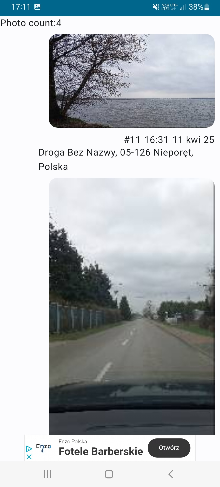
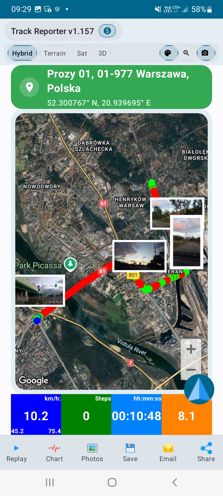
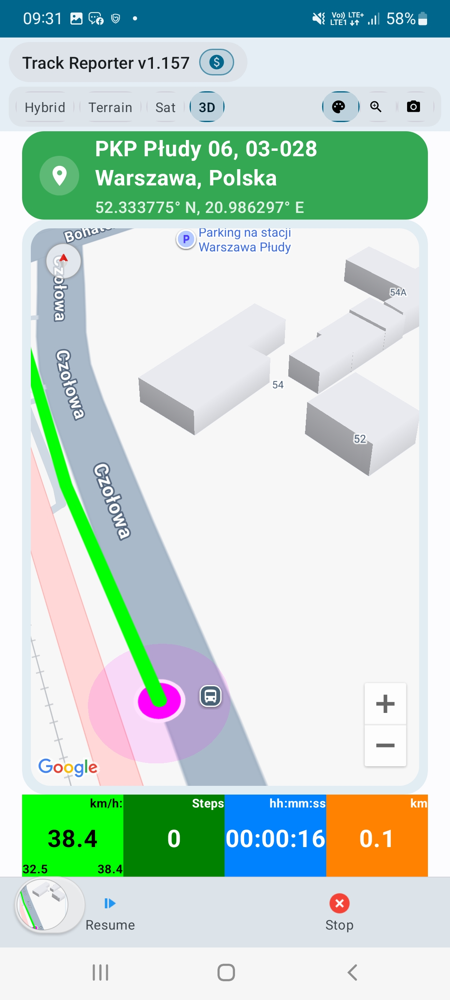

Record. Verify. Monitor field work.
Record GPS routes, capture GPS photo evidence, monitor field teams in real time, explore shared route history on the map and generate professional PDF reports. Verify inspections, deliveries, maintenance and other field work with trusted GPS documentation. Create and assign Work Orders, track their status and link recorded routes to completed jobs.



 Track Reporter
Track ReporterYour Fleet
Monitor your fleet, browse shared GPS routes and view Work Orders with linked routes and photos. Create and assign Work Orders in your fleet dashboard or Android app.
Sign in to access your fleet.
My Fleet
Route photos
Explore a real GPS route in photorealistic 3D. Press Play on the map to watch 10 seconds of the recorded GPS route in 3D, then explore the full route in Hybrid with photo thumbnails. Select photo markers to see location-tagged pictures. Use the playback controls to pause, replay, or jump to any point. Sign in with Google to explore your own fleet’s shared routes and photos.
Live fleet locations are shown with colored markers. Select shared routes to display their GPS tracks and photo thumbnails. Click a thumbnail to view the full photo. Active recordings show LIVE member positions.
Work Orders map view: routes from the selected Work Orders are displayed together, with their GPS photo thumbnails. Click any thumbnail or gallery photo to open the full image. Use Hybrid to compare several routes, or select one route for 3D playback.
LIVE: waiting for data...
GPS Documentation
Record routes with timestamps, distance and map visualization for reliable inspection records.
GPS Photo Evidence
Capture photos linked to precise GPS coordinates, timestamps, categories and notes.
Professional PDF Reports
Generate professional PDF reports and share verified field work with clients or your team.
Fleet Monitoring & Route History
Monitor fleet members' locations in real time, browse their shared route history and display multiple recorded routes on an interactive map.
Work Order Management
Create and assign Work Orders to fleet members, track progress and completion, and link recorded GPS routes to specific jobs.
Turn field visits into documented proof of work.
Learn how GPS routes, location-tagged photos and PDF reports can help you document inspections, maintenance visits and other field activities.
Read the guideVerify field work with GPS evidence.
Record routes, capture GPS photo evidence, monitor field teams live, browse shared route history on an interactive map and generate professional reports for customers, audits and internal documentation. Assign Work Orders and link GPS routes to completed tasks.